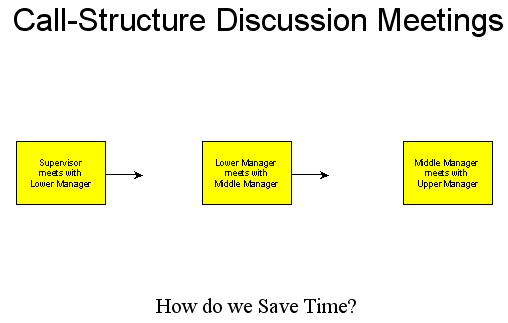
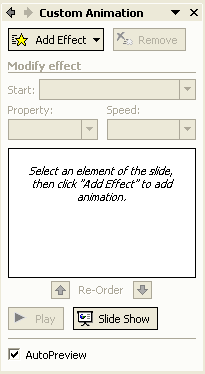
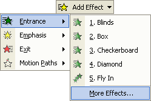
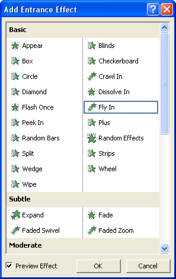
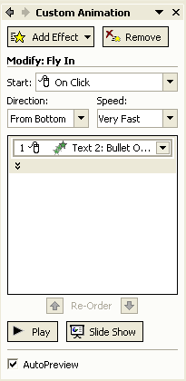
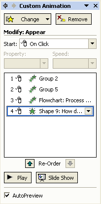

Free
powerpoint
Tutorials
|
Free
powerpoint
Tutorials
|
|
 home home |
Stay at Home and Learn | ||||
Custom Animation - PowerPoint 2003 |
|||||
|
Flow Charts 1, 2, 3, 4, 5, 6, 7 Tables Charts
If you've been following along with the lessons, you should now have a slide that looks like this:  What we're going to do for the animation is, when the slide first appears, have nothing on the slide except the heading at the top. When the mouse button is clicked each object will appear from the left. To see it in action, launch Presentation 3 again. Navigate to slide 5 and watch what happens when you click the left mouse button.
To animate the slide objects if you have PowerPoint 2003, click on your first rectangle shape to select it. If it's selected correctly, you'll see white circles around the edges. With the first triangle selected, click Slide Show > Custom Animation from the menu bar at the top. You should then see the following Task Pane appear:  Click the Add Effects button and select Entrance > More Effects:  From the dialogue box that appears, select the Fly in item:  Click OK. Your Task Pane will then look like this:  Click the Direction dropdown list, and select From Left (it's set to From bottom, in the image above). Leave the Speed on Very Fast. Now click the second rectangle on your slide to select it, instead of the first, and do the same as above. Select the third rectangle over on the slide, and again do the same thing as for the first two. Finally, click the text box at the bottom of your slide. This time, click Add Effect > Entrance > More effects. Then select Appear from the list instead of Fly in. Your Task Pane will then look something like this:  On the slide itself, you should see the numbers 1 to 4 appear besides each object. Notice the green arrows in the Task Pane, just above the Play and Slide Show buttons. If your objects are out of sequence, you can select an object and move it up or down the order by clicking the green arrows. To test out your new animation, press the F5 key on your keyboard and view your slide show so far.
In the next part of this tutorial, you'll get some more practice with creating Flow Charts in PowerPoint. |
||||